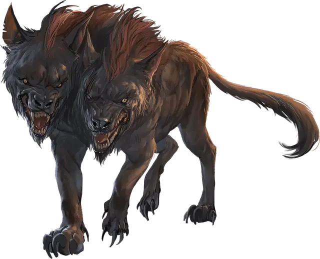

Пёс смерти
Death Dog
Средний Монстр, нейтрально-злой

Класс Доспеха 12
Хиты 39 (6к8 + 12)
Скорость 40 футов
| мод | спас | ||
|---|---|---|---|
| СИЛ | 15 | +2 | +2 |
| ЛОВ | 14 | +2 | +2 |
| ТЕЛ | 14 | +2 | +2 |
| мод | спас | ||
|---|---|---|---|
| ИНТ | 3 | −4 | −4 |
| МДР | 13 | +1 | +1 |
| ХАР | 6 | −2 | −2 |
Навыки Восприятие +5, Скрытность +4
Чувства тёмное зрение 120 футов, пассивное Восприятие 15
Опасность 1 (200 опыта)
Бонус мастерства +2
Среда обитания Пустыня
Особенности
Двуглавость. Пес совершает с преимуществом проверки Мудрости (Восприятие), а также спасброски от глухоты, испуги, лишения сознания, ослепления, очарования и ошеломления.
Действия
Мультиатака. Пес совершает две атаки укусом.
Укус. Рукопашная атака оружием: +4 к попаданию, досягаемость 5 футов, одна цель. Попадание: Колющий урон 5 (1к6 + 2). Если цель — существо, она должна преуспеть в спасброске Телосложения Сл 12 от болезни, иначе станет отравленной, пока не вылечится от болезни. За каждые прошедшие 24 часа существо должно повторить этот спасбросок, уменьшая максимум хитов на 5 (1к10) при провале. Это уменьшение длится до тех пор, пока болезнь не будет вылечена. Существо умирает, если болезнь уменьшает максимум хитов до 0.
Описание
Пес смерти это уродливая двуглавая гончая, обитающая на равнинах, в пустынях и в Подземье. Ненависть пылает в его сердце, а любовь к пожиранию гуманоидной плоти заставляет нападать на путников и исследователей. Слюна пса смерти переносит болезнь, из-за которой плоть жертвы медленно отгнивает от костей.